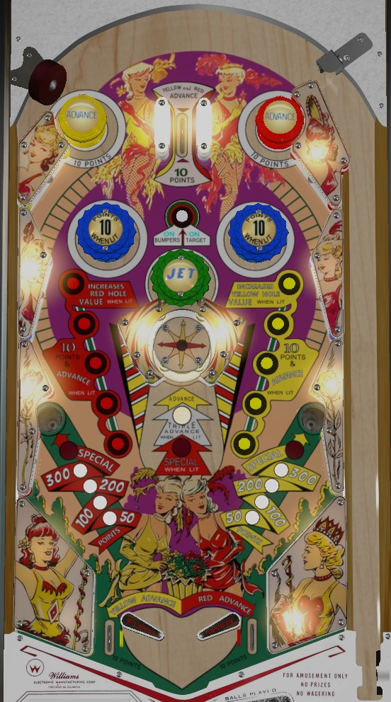

Yellow and Red sequences can be advanced by the top passive bumpers, the center carousel target, the rollover button lines along the sides of the table, and the out lanes. The center top lane advances both colours at once. Advancing either colour scores 10 points. Every 5 advances of a colour increases the value of one of the gobble holes: Red on the left, Yellow on the right. Gobble holes start at 50 points and increase to 100, then 200, then 300, then Special. Of course, gobble holes end the current ball in play, so these bonuses can only be collected a limited number of times.
The center carousel target advances either the red or yellow bonus when hit, depending on which side is visible. Advancing either gobble hole's value or hitting the carousel target itself will rotate which face is visible; faces can be red or yellow.
The single rollover button between the blue pop bumpers, when pressed, will light the blue bumpers (for 10 points instead of 1) and light the carousel target for the rest of the ball. When the carousel target is lit, hitting it awards 30 points and 3 advances of whichever colour is exposed. If both Red and Yellow have been advanced to where their gobble holes score a Special, the center target will be lit for Special instead of triple advance when the bumpers are on.
The out lanes are right behind the flippers, making it impossible to cradle the ball. Conversely, some impressive out lane saves can be made by nudging in the out lane and activating the flipper to rattle it back into play. Slingshots extend to the edges of the table and score 1 point.
There is no end of ball bonus or extra ball feature. Tilt ends game.
The below picture of 4 Roses' playfield was taken from the VPX recreation by Balater.

| If you need... | Try... |
| points | |
| points | |
| points | |
| points | |
| points | |
| points or more |